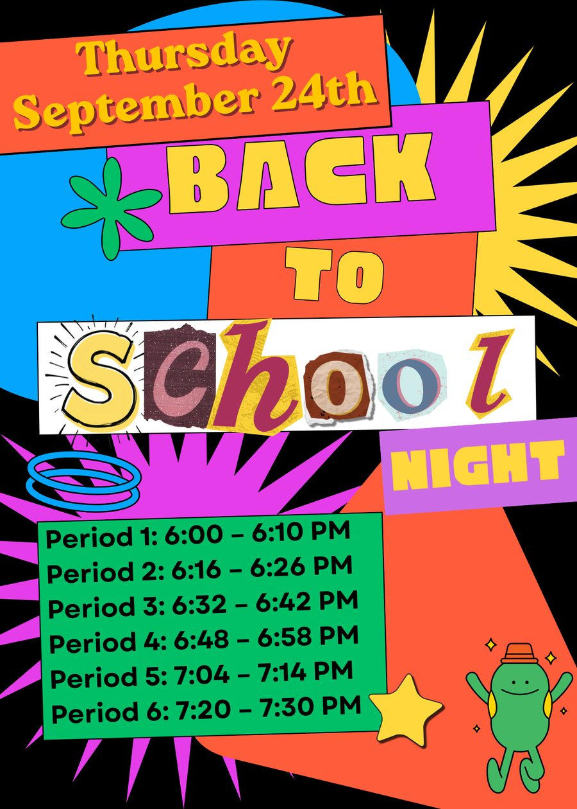

ERWC 12
Expository Reading & Writing · Mr. Finnigan · Pinole Valley High School
Get in touch
Questions pop up after you've left the room? Totally normal. Email me anytime.
- Timothy.Finnigan@wccusd.net
- Room
- D202
- Office hours
- Tue & Thu after school (students book on Canvas)
- Lunch
- Door's open
What this class is
A yearlong, CSU-designed course built for one job: to push students to read, write, speak, and listen in ways that'll serve them for life.
Expository shares a root with "expose." Expository writing exists to clarify and explain, not to entertain or win you over. Good writing has a job to do, and different jobs call for different writing:
- Descriptive immerses you in a scene.
- Narrative hooks you with a story.
- Persuasive wins you to its side.
- Expository teaches you the truth.
Students read contemporary, often contested issues, learn what's in the media's bag of tricks, hold multiple perspectives before committing, and build arguments that survive contact with a skeptic. Rhetorical awareness, argument, and the metacognition to keep getting better at both. That's the whole enchilada.
Grades at a glance
| Category | Weight | What it is |
|---|---|---|
| Summative | 40% | Essays, projects, presentations. 3–4 per semester, at the end of units. |
| Formative | 30% | Quizzes, Socratic seminars, fishbowls. A temperature check 2–3 times a unit. |
| Engagement & Process | 30% | Notebooks, worksheets, checkpoints, on-the-spot scores. 30–40 times a semester. This is where points quietly leak. |
Heads up: the semester grade is not the two quarter grades averaged. A 70% in Q1 and 90% in Q2 won't land at 80%. It runs on cumulative points across the whole semester.
Where to check: PowerSchool is the official gradebook, updated 5–8 times a quarter. Assignments and content live on Canvas.
Late work & retakes
| Daily assignments | Max score |
|---|---|
| 1–4 days late | 85% |
| 5–10 days late | 75% |
| More than 10 days late | Fuhgeddaboudit |
- Quizzes: 10 days to retake.
- Socratic seminars: one reschedule per seminar. Miss that and there's one 1-on-1 makeup per year.
What we read, watch & build
Sample unit: Who's Allowed to Change Your Mind?
Persuasion & propaganda, about 7 weeks. Students analyze propaganda across ads, speeches, and memes (Bernays, Orwell, Aristotle, Renée DiResta), hold a Socratic seminar on whether all persuasion is manipulation, then write an argumentative essay and build their own propaganda piece with notes naming every technique they used.
How class runs
We work in bursts. Lights down, music off: 6–10 minutes locked in, no tech, no talk. Lights up, music on: a short breather. Repeat. Get it right and we finish early; get it wrong and we work to the bell.
Every day, bring: a charged Chromebook, a notebook, and something to write with.
Values we practice
- Volunteerism: speak up, ask questions, demo.
- Process over product: how you work matters more than what you turn in.
- Presence: laptop shut, phone pocketed, eyes up.
- Troubleshooting: when it breaks, ask why.
- Forge connections: work with people outside your usual crew.
- Self-direction: nobody hands you an education. Go grab it.
If behavior goes sideways
Side eye → verbal reminder → hallway conversation → call home → referral (rare, handled with Mr. Davis, VP).
AI in this class
AI rewards people who know how to think and punishes people who use it to avoid learning how. The escalator gets you to the top, but your legs didn't do the climbing.
| Skillful use | Foolish dependence |
|---|---|
| Builds a draft, then asks AI to stress-test it | Has AI draft it, calls it theirs |
| Checks reasoning with it | Lets it do the reasoning |
| Can explain every line turned in | Can't defend their own paragraph |
The gut check: could you make a rough version without it? If yes, use AI to sharpen. If no, build the skill first.
Key dates
| Oct 23 | End of Quarter 1 |
| Nov 23–27 | Thanksgiving recess |
| Jan 16 | End of Semester 1 |
| Jun 12 | Last day of school |

One ask for families
The students who do best here are the ones who come talk to me: before class, at lunch, after school. If you can nudge yours to stop by, that nudge goes a long way.